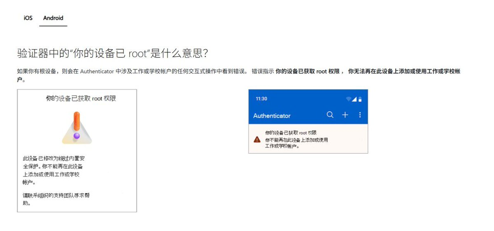

傻逼微软更新了其验证器的文档，检测到设备取得root权限后，其所有功能（已经添加的一次性密码、账户的批准登录功能）将会全部被禁用（即使它们完全可以正常工作）
此举完全没有考虑用户的需求，导致多位朋友的root/越狱设备都被该傻逼验证器拦截了，然而这验证器只有查看/批准的需求。只记得早期的微软验证器类似1Password，可以同步、添加并作为密码填充工具使用，后面砍了，功能给Microsoft Edge手机版
以微软尿性，不知道后面还要干什么，建议换成Google Authenticator等验证器。并为账户添加不止一种验证方式，例如邮箱、手机号、Passkey(通行密钥)，以免失去对该帐户的访问权限。
此举完全没有考虑用户的需求，导致多位朋友的root/越狱设备都被该傻逼验证器拦截了，然而这验证器只有查看/批准的需求。只记得早期的微软验证器类似1Password，可以同步、添加并作为密码填充工具使用，后面砍了，功能给Microsoft Edge手机版
以微软尿性，不知道后面还要干什么，建议换成Google Authenticator等验证器。并为账户添加不止一种验证方式，例如邮箱、手机号、Passkey(通行密钥)，以免失去对该帐户的访问权限。
